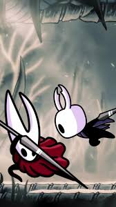
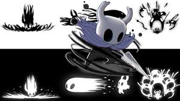
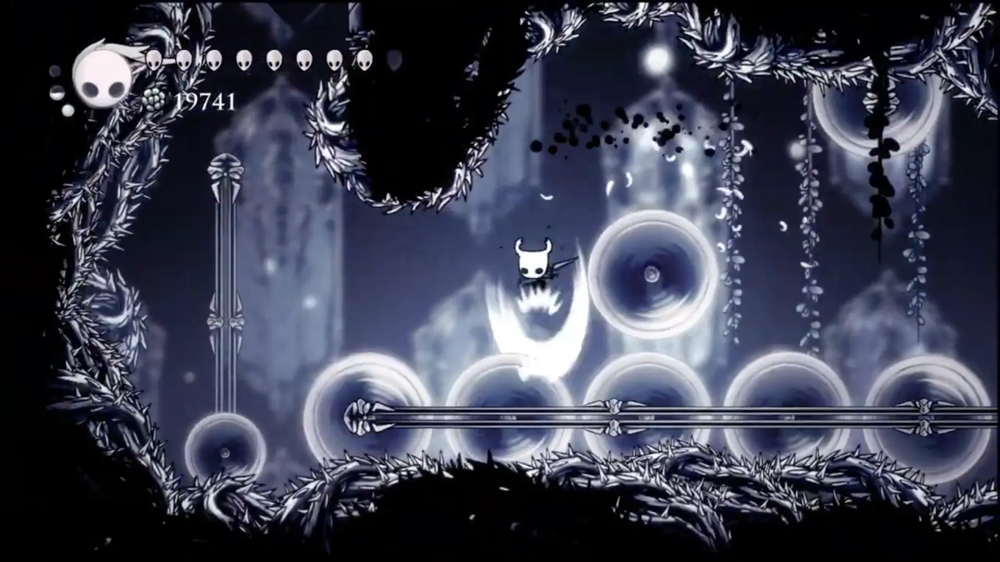

Lucha
El caballero tiene un aguijon con la cual sera su arma durante todo el juego. Para poder mejorar el aguijon habra que recolectar determinadas piezas e ir donde el herrero. Cada vez que lo mejore aumentara +1 su nivel de ataque.
Medallones

Existen diferentes medallones a lo largo del juego ya sea en las tiendas, ocultas en las zonas o al vencer algunos jefes. Habra un limite de puntos de medallones, es decir, cada medallon puede ocupar entre 1 o 4 puntos. Si este logra superar el limite al insistir mucho se sobrecarga esos puntos haciendo que cada ataque recibido se duplique
Habilidades

Existiran diferentes habilidades que se nos da a lo largo del juego, entre ellos:
Hechizo: Lanzara un ataque poderoso consumiendo mana
Recarga: Recargara el mana.
Dash: El caballero hara un dash que le dara un impulso hacia adelante.
Alas: El caballero podra hacer un doble salto.
Garras de Mantis: El caballero podra agarrarse de las paredes
Corazon de Cristal: El caballero se preparara para dar un enorme impulso hacia adelante capaz de pasar zonas en segundos.
Hechizo Oscuro: Evolucion del hechizo normal donde el ataque sera oscuro
Dash Oscuro: El caballero hara un dash que le dara un impulso hacia adelante y sera capaz de ser invencible en ese proceso. Tiene Tiempo de recarga.
Aguijon Onirico: Se podra ver la mente de los enemigos, espiritus, aliados, entre otros y observar lo que dicen en ese momento. Se podra evolucionar para entrar a la mente de los enemigos o a Hallownest, incluso se podra teletransportar.
Parkour
Habra zonas de pinchos, solo paredes, entre otros desafios los cuales segun el nivel de dificultad requerira bastantes de las habilidades. Tambien el caballero podra hacer parry para evitar ser golpeado por los pinchos y seguir avanzando aunque hay que hacer en el momento justo.